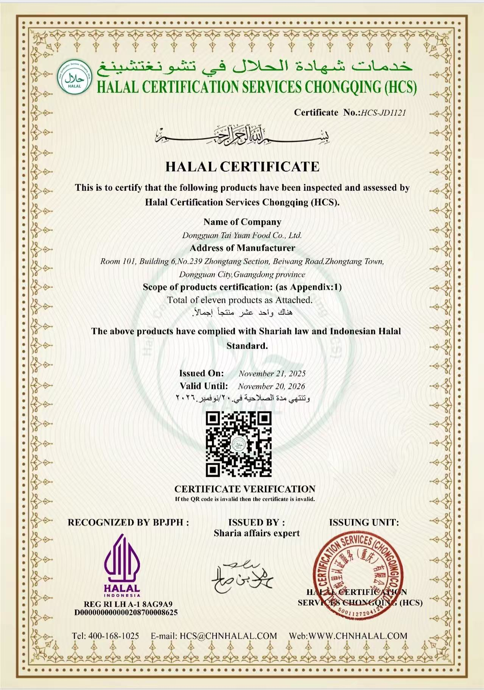
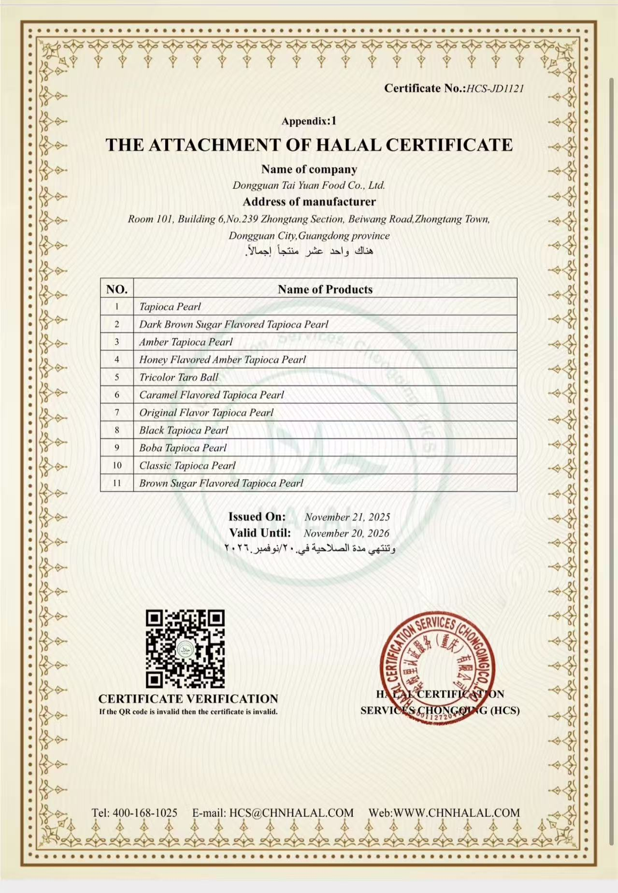

主证书 / Main certificate
食品安全管理体系认证书（中文） Food Safety Management System Certificate (Chinese)
用于客户审核、供应商准入和合规资料提交。
这里展示 ISO 22000:2018 食品安全管理体系认证等资料，帮助客户快速确认企业基础资质与合规能力。 This section shows key certificates and documents.
这类证书主要用来证明生产体系、质量控制和供应稳定性，便于客户做供应商审核、合作决策和资料归档。 These certificates show production control, quality management, and supply reliability for audits and cooperation review.
用于客户审核、供应商准入和合规资料提交。
适合海外客户、英文资料和跨语言合作场景。
加强国际认可度，适合放在招投标和对外资料里。

清真认证主证书图片，放入 `images/certification/halal-certificate-main.jpg` 后即可显示。用于证明产品符合清真要求，便于进入特定市场。

清真认证附件页图片，放入 `images/certification/halal-certificate-appendix.jpg` 后即可显示。可补充产品范围、有效范围和附加说明，帮助审查更完整。
这里预留给营业执照、检测报告、第三方审厂等补充资料。